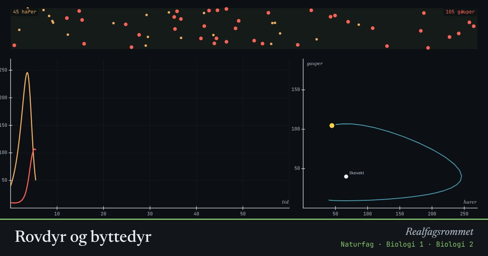

Rovdyr og byttedyr
Når det er mange harer, får gaupene mye mat og blir flere. Da blir det færre harer, og etter hvert sulter gaupene. Bestandene svinger i takt, med rovdyrene litt etter.
Start animasjonen
Formler
Om animasjonen
Kurvene viser antall harer (oransje) og gauper (røde) over tid. Toppene til gaupene kommer etter toppene til harene.
Til høyre ser du det samme som en bane: antall harer mot antall gauper. Bestandene går i en sløyfe rundt et likevektspunkt.
Modellen er Lotka–Volterra-likningene. Virkelige bestander påvirkes også av vær, sykdom, andre arter og mennesker.
Hjortedyr og ulv, lemen og fjellrev, og hare og gaupe i Canada er kjente eksempler.
Prøv dette
- Hva skjer med svingningene når gaupene blir flinkere til å jakte?
- Jakt på gaupene når harebestanden er lav. Hva skjer etterpå?
- Hvorfor blir det ikke uendelig mange harer når gaupene er få?
- Hva betyr likevektspunktet? Finn det i figuren.
Kompetansemål
- Naturfag: Klimaendringer, utbredelse av arter og biologisk mangfold
- Biologi 1: Økosystemer og biologisk mangfold
- Biologi 2: Populasjoner: vekst og forvaltning
Mer om økologi og populasjoner
- Hvor mange fisk er det i vannet? Fangst–gjenfangst
- Eksponentiell og logistisk vekst
- Energistrøm og næringskjeder
- Miljøgifter hoper seg opp i næringskjeden
- Klimaendringer og artenes utbredelse
- Karbonkretsløpet og CO₂ i atmosfæren
Mer om klima, miljø og bærekraft
- Drivhuseffekten og jordas strålingsbalanse
- Karbonkretsløpet og CO₂ i atmosfæren
- Havforsuring: CO₂ gjør havet surere
- Klimaendringer og artenes utbredelse
- Miljøgifter hoper seg opp i næringskjeden
- Energistrøm og næringskjeder
- Grønn kjemi: atomøkonomi
- Årstider, dagslengde og solinnstråling
- Regnskygge og føhn: hvorfor Bergen er våtere enn Oslo
- Flom: regn, jord og asfalt